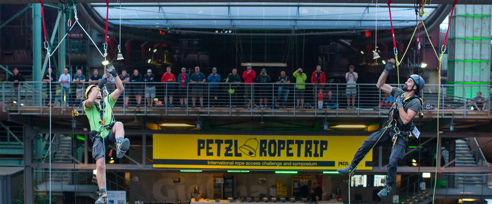
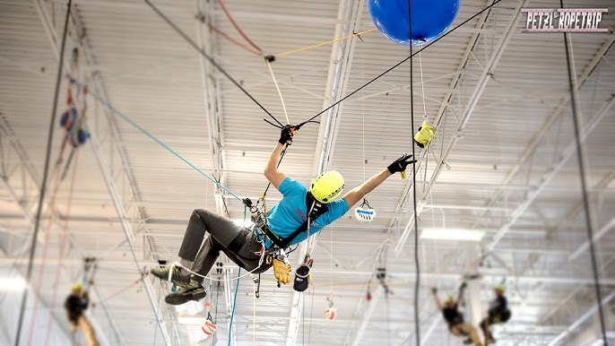

Fune D.Lgs. 81/08
Si avvicina il ritorno del Petzl RopeTrip® in Italia
Abilità, velocità, lavoro di squadra, condivisione e passione: sono alcuni degli ingredienti dell'edizione italiana del Petzl RopeTrip®. Un evento imperdibile, che riunirà a Brescia i migliori cordisti non solo italiani ma provenienti anche da diversi Paesi Europei.
Alpinismo e Rope Access, due universi paralleli mossi da un denominatore comune: la passione

Vi siete mai chiesti quali siano le affinità tra due mondi, quello dell'alpinismo e quello del Rope Access, solo all'apparenza distanti eppure così ricchi di abilità e conoscenze comuni?
A scandire i passi verticali dei lavoratori su fune e degli alpinisti sono le attrezzature, alleate fondamentali da conoscere al meglio per garantire la propria sicurezza e quella altrui, le manovre, da conoscere per sapersi destreggiare in quota, e il lavoro di squadra, perché in parete, come in un cantiere, non si è quasi mai soli.
Così come nelle situazioni di emergenza: quando c'è da mettere in atto delicate procedure di soccorso, la collaborazione assume contorni essenziali.
Corde, imbracature, caschi, moschettoni, discensori, carrucole…
Il mondo dei cordisti e quello degli alpinisti hanno molti punti in comune. In parete, come su un traliccio ad esempio, il lavoro di squadra, la conoscenza delle manovre di corda e dei DPI è vitale.
Un incontro speciale con Federica Mingolla

Per questo abbiamo voluto ospitare, in questa edizione del Petzl RopeTrip®, un'atleta del Team Petzl davvero eclettica e eccezionale, capace di misurarsi con la montagna a 360 gradi: stiamo parlando di Federica Mingolla che in una serata talk ci parlerà di sé stessa e del suo incontro con una delle montagne più alte del mondo, il K2.
L'appuntamento è alle 18:00 di sabato 21 giugno!
L'incontro con Federica sarà una bella occasione di scambio reciproco tra due mondi che procedono paralleli, mossi da un denominatore comune: la passione.
Federica ha saputo farsi strada in un ambiente che per tradizione appartiene per lo più all'universo maschile, così come il mondo del Rope Access.
Ma quando si incontra una fuoriclasse come lei è subito chiaro che le distinzioni di genere sono oggi un retaggio privo di fondamenta, perché la sola cosa che conta è la dedizione e la voglia di raggiungere i propri obiettivi.
Dalle ore 19:30, riposte corde e moschettoni, si lascerà spazio al cibo e ad un momento di festa con il Party del Petzl RopeTrip®!
Petzl RopeTrip® e SicurLive Group, un'accoppiata vincente

Domenica 22 giugno dalle 08:30 tutte le squadre partecipanti si riuniranno nuovamente negli spazi di SicurLive Group per scoprire le ultime prove della fase di qualifica che dovranno affrontare.
La padronanza delle tecniche di accesso su fune oltre alla capacità di muoversi e lavorare in team in maniera coordinata, dimostrando dimestichezza e conoscenza di tutti gli strumenti di lavoro e delle tecniche necessarie per ottimizzare fatica, tempo e risultati, sono le componenti principali di ogni sfida.
La rapidità di esecuzione costituisce poi un criterio importante, ma i giudici verificheranno per prima cosa il rispetto delle regole di sicurezza da parte di tutti i partecipanti. Al termine delle qualificazioni, le squadre più performanti gareggeranno a partire dalle 13:30 nelle semifinali e poi nella prova finale.
Insomma davvero un appuntamento da non perdere!
Al termine della giornata di domenica, alle 17:30, risuoneranno le campane, trofeo simbolo dell'Edizione Italiana dell'evento.
Sul podio ritroveremo le squadre vincitrici di un evento che vi regalerà suggestioni uniche insieme ad uno spaccato di una realtà professionale in continua crescita dove la passione è un pilastro fondamentale che unisce e aiuta a far crescere tutti, aziende, professionisti e mondo del lavoro!